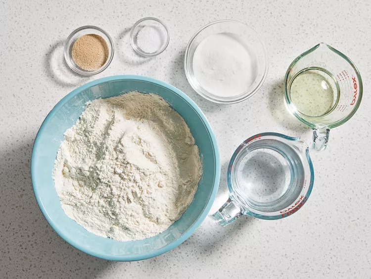
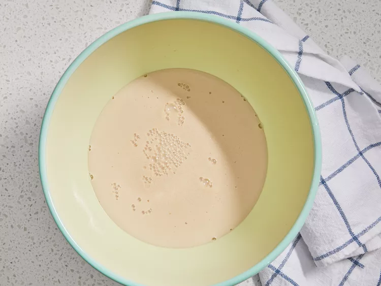
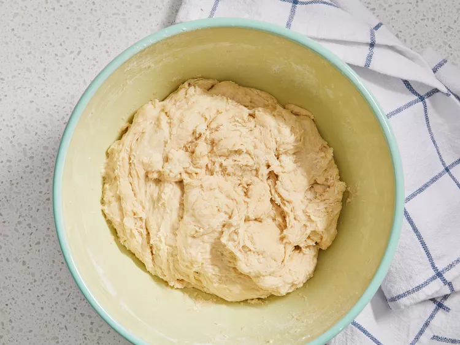
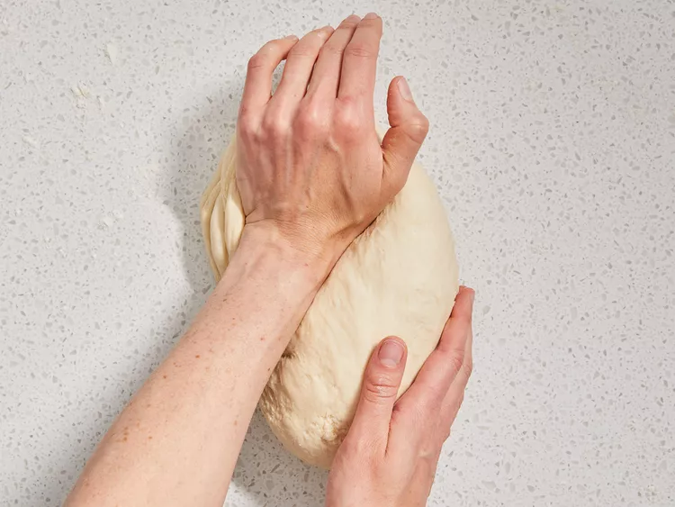
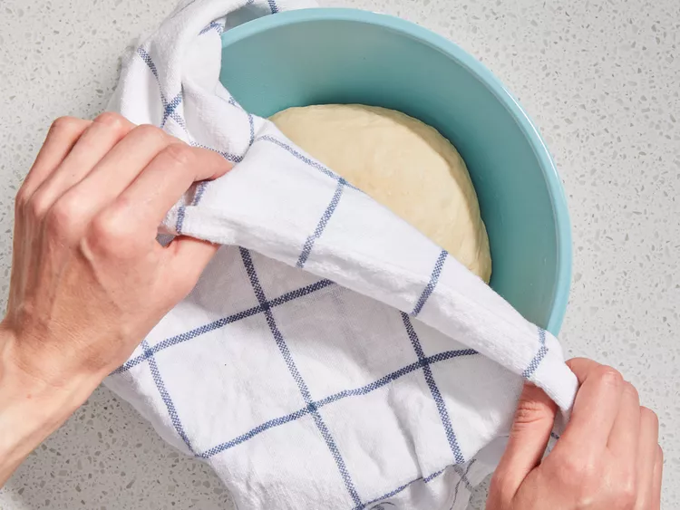
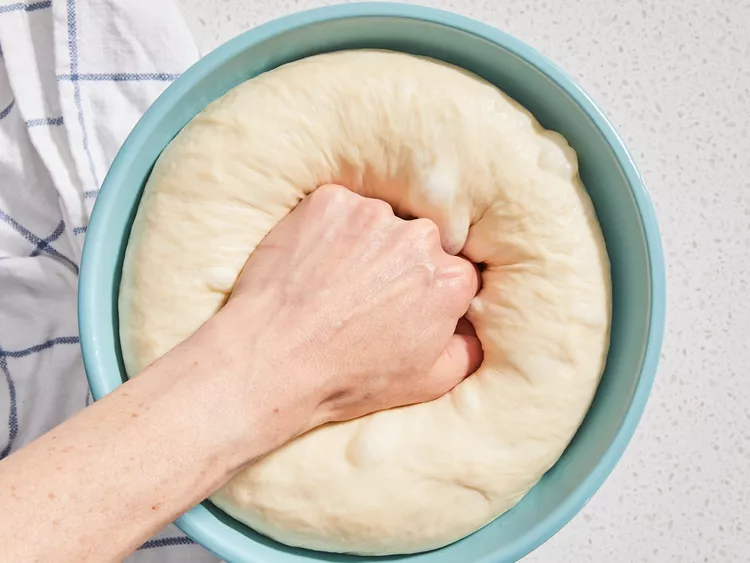
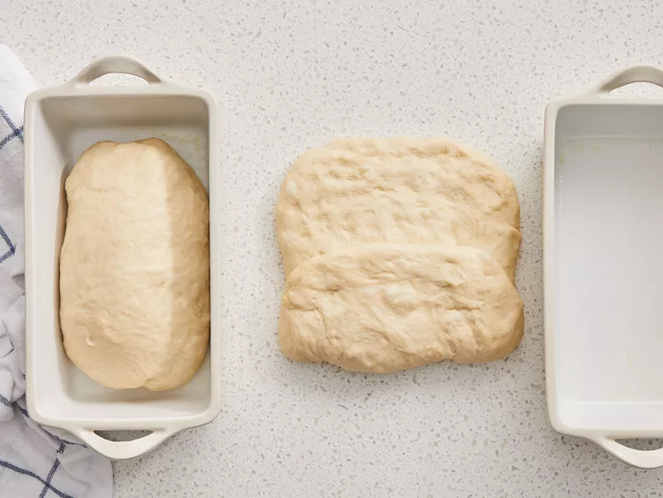
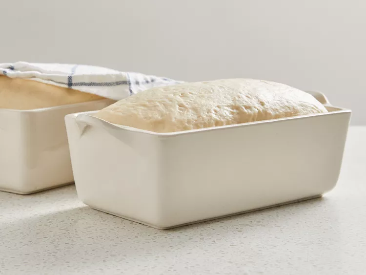
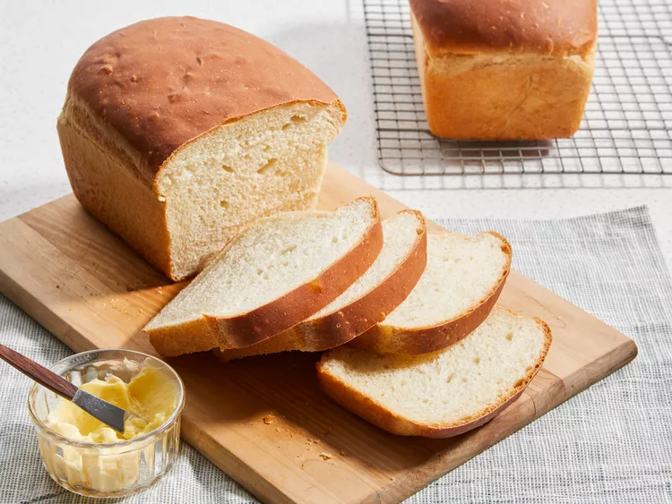

White Bread Recipe

Description
This white bread recipe is a classic recipe that is easy to make and turns out perfectly every time. It's a great recipe for beginners and experienced bakers alike!
Ingredients
- 2 cups warm water (110 degrees F/45 degrees C)
- ⅔ cup white sugar
- 1 ½ tablespoons active dry yeast
- ¼ cup vegetable oil
- 1 ½ teaspoons salt
- 6 cups strong white flour
Directions
- Gather all ingredients. 
- Dissolve sugar in warm water in a large bowl, and then stir in yeast. Allow to proof until yeast resembles a creamy foam, 5 to 10 minutes. 
- Mix oil and salt into the yeast. Mix in flour one cup at a time. 
- Knead dough on a lightly floured surface until smooth. 
- Place in a well-oiled bowl, and turn dough to coat. Cover with a damp cloth. Allow to rise until doubled in bulk, about 1 hour. 
- Punch dough down. 
- Knead for a few minutes, and divide in half. Shape into loaves, and place into two well-oiled 9x5-inch loaf pans. 
- Allow to rise until dough has topped the pans by one inch, about 30 minutes. 
- Meanwhile, preheat the oven to 350 degrees F (175 degrees C).
- Bake the risen loaves in the preheated oven until golden brown for 30 minutes.
- Enjoy! 